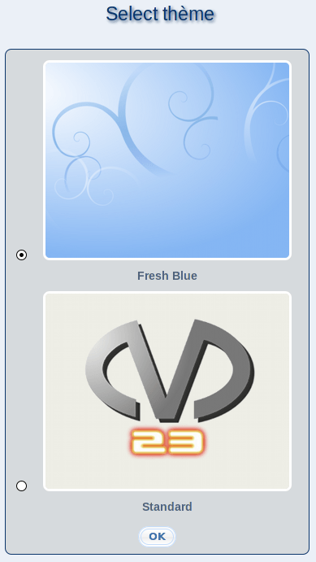

suivant:
Service de téléadministration de
monter:
Serveur
précédent:
Proxy système
Table des matières
Choix du thème
Ici, vous pouvez adapter l'apparence de m23. Choisissez le thème qui vous plaît le plus entre les thèmes proposés. Puis, cliquez sur
''OK''
. Ce paramètre s'applique seulement à votre compte d'utilisateur.

root 2017-06-22